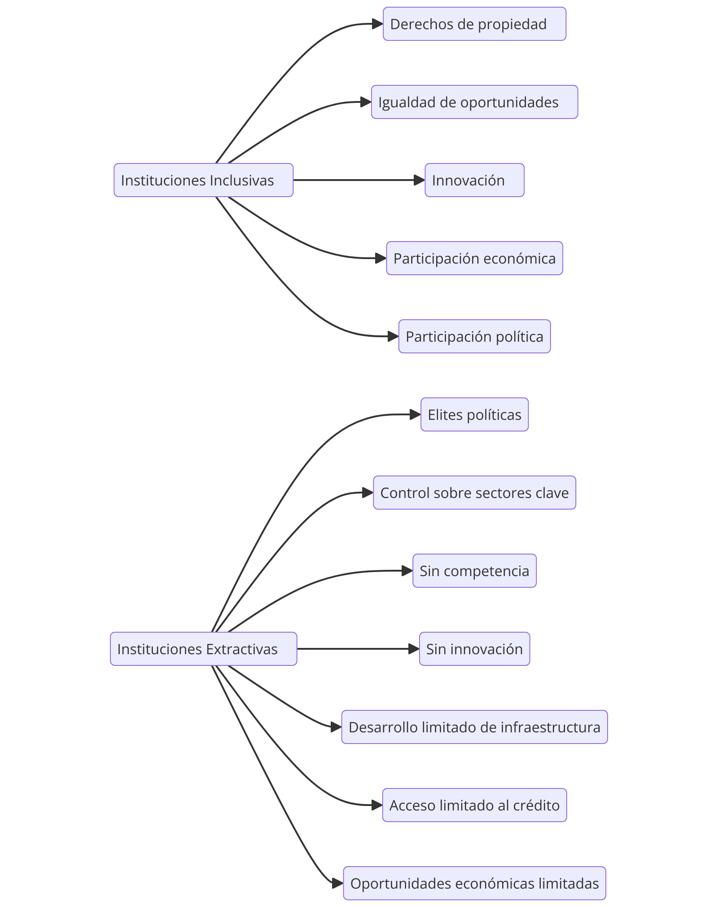

Este capítulo introduce de manera más formal las dos categorías de instituciones: inclusivas y extractivas. Las instituciones inclusivas son aquellas que permiten la participación de la mayoría de la población en actividades económicas y políticas, asegurando derechos de propiedad, igualdad de oportunidades y un entorno en el que las innovaciones y el espíritu empresarial puedan florecer. Las instituciones extractivas, por otro lado, son diseñadas para beneficiar a una minoría que ejerce control sobre la mayoría, extrayendo riqueza sin crear incentivos para el crecimiento y la innovación.
El énfasis aquí está en cómo las instituciones extractivas restringen el surgimiento de nuevas empresas competitivas, manteniendo el control sobre sectores clave de la economía. Las grandes empresas, frecuentemente vinculadas a las élites políticas, no enfrentan competencia ni innovación, ya que el marco institucional está diseñado para mantener el poder económico concentrado. El desarrollo de la infraestructura, el acceso al crédito y las oportunidades económicas son limitadas para mantener a la mayoría bajo control.